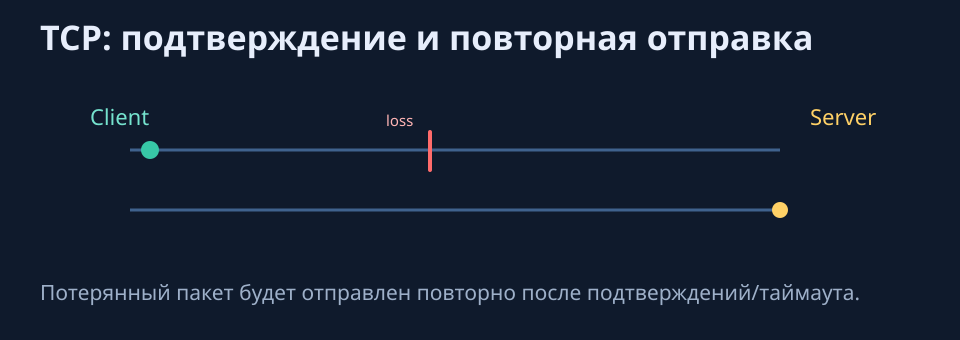
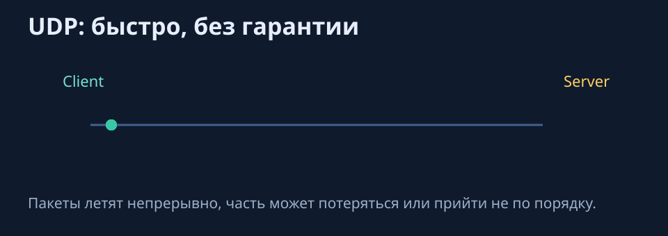
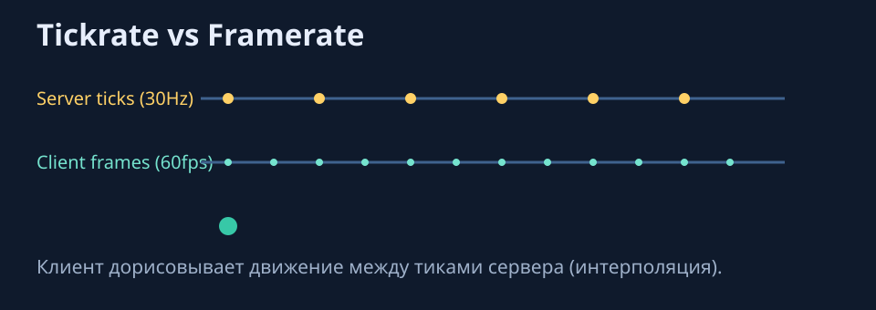
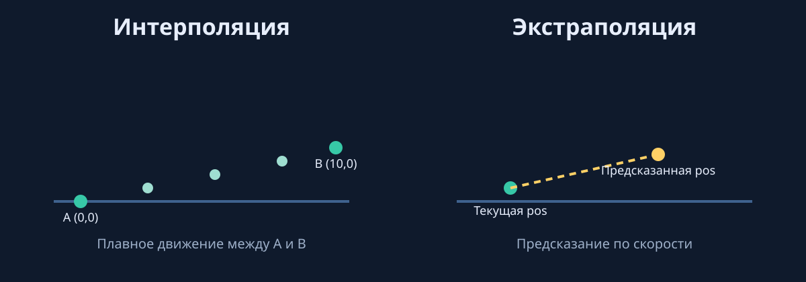
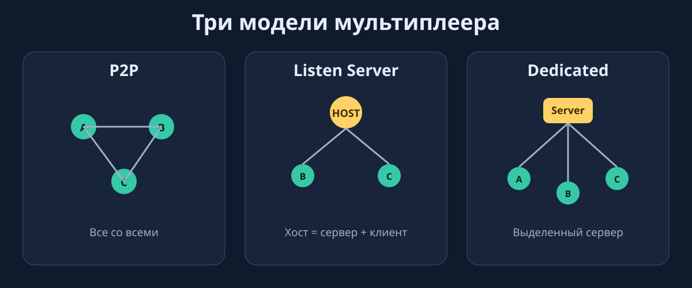
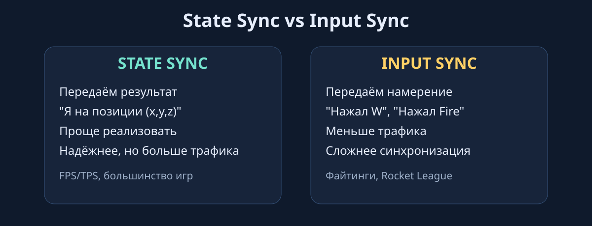

UDP: может терять и перемешивать пакеты, быстрее, меньше overhead. Примеры: игры, стримы, звонки.

TCP retransmit
Пакет подтверждается. Если потерян, протокол повторно отправляет его.

UDP fast flow
Пакеты отправляются быстро, но без гарантии порядка и доставки.
Аналогия: TCP - заказное письмо с уведомлением, UDP - обычная открытка.
Пояснение
В шутерах важнее актуальность состояния, чем абсолютная полнота доставки каждого пакета. Если пакет старый, его ценность быстро падает, поэтому UDP чаще даёт более "живой" отклик управления.
Когда выбрать TCP
Для мета-данных: авторизация, загрузка контента, инвентарь вне realtime-боя. Для боевой синхронизации обычно используют UDP и дополнительные механизмы над ним.
Что такое пакет
NETWORK PACKET (UDP): header + payload.
Header: Source IP, Destination IP, Port.
Payload: Player ID, Position, Rotation, Timestamp.
Типичный размер пакета: около 128 байт.
Расчёт трафика:
10 игроков x 60 пак/с x 128 B = 76.8 KB/sec.
100 игроков x 60 пак/с x 128 B = 768 KB/sec (около 6 Mbps).
В шутере каждое движение игрока отправляется пакетами, до 60 пакетов в секунду.
Tickrate, Update Rate, Framerate
Tickrate: как часто сервер обрабатывает логику.
Update Rate: как часто клиент получает данные.
Framerate: как часто рисуется картинка.

Tickrate vs Framerate
Клиент рисует чаще, чем сервер тикает, поэтому сглаживает движение между апдейтами.
Client обновляется чаще, чем Server тикает, поэтому нужна интерполяция.
Примеры: CS:GO (64 tick, pro 128), Fortnite (30), Rocket League (60).
Низкий tickrate: "пуля не попала, хотя прицел был на голове". Высокий tickrate: больше нагрузка и дороже хостинг.
Пояснение
Tickrate отвечает за "частоту истины" на сервере. Framerate клиента может быть высоким, но если сервер обновляет редко, клиент вынужден дорисовывать промежуточные состояния.
Практический совет
Начинайте с умеренного tickrate и измеряйте CPU/трафик. Повышайте частоту только если реально улучшает hit-reg и отзывчивость.
Интерполяция и экстраполяция

Сглаживание прошлого и предсказание будущего положения игрока.
Интерполяция: сглаживание прошлого между известными позициями A и B.
Экстраполяция: предсказание будущего по последней позиции и скорости.
Когда приходит реальная позиция, клиент корректирует расхождение. Ошибка проявляется как "телепорт".
Пояснение
Интерполяция делает движение визуально гладким, но добавляет небольшую задержку отображения. Экстраполяция уменьшает задержку, но риск ошибки выше.
Типичная ошибка
Слишком агрессивная экстраполяция: персонажи часто "прыгают" назад после серверной коррекции.
Три модели мультиплеера

Сравнение сетевых топологий: P2P, хост-клиент и выделенный сервер.
P2P (Peer-to-Peer): все соединены со всеми.
Listen Server (Host-Client): один игрок одновременно сервер и клиент.
Dedicated Server: отдельный сервер для всех игроков.
Выбор топологии - компромисс между стоимостью, защитой и сложностью.
Как выбирать
Для учебного прототипа часто стартуют с Host-Client, чтобы быстрее собрать игровой цикл. Для соревновательного режима и античита нужна миграция к Dedicated.
Peer-to-Peer (P2P)
Плюсы: не нужен сервер, низкая задержка для близких игроков, просто для 2-4 игроков.
Минусы: не масштабируется, легко читерить, 1 лагает - страдают все, NAT traversal.
Плюсы: защита от читов, стабильность, масштаб (64-100+ игроков), равные условия.
Минусы: дорого ($1000-5000/месяц), сложнее в разработке, нужна инфраструктура (DevOps).
Примеры: CS:GO, Valorant, Overwatch, Fortnite, PUBG, Apex Legends, большинство AAA-мультиплееров.
Relay Server (гибридная модель)
Unity Relay Service встроен в NGO.
Как работает:
Один игрок выступает хостом (как Listen Server).
Трафик проходит через облачный Relay.
Relay только пересылает пакеты.
Зачем нужен: решает NAT traversal, скрывает IP игроков, не требует публичного IP у хоста.
Недостатки: у хоста остаётся преимущество, появляется доп. задержка через облако, читы возможны на стороне хоста.
Authority
Client Authority: клиент сообщает серверу готовый результат (может врать).
Server Authority: клиент просит действие, сервер проверяет и разрешает.
В 99% игр для критичных действий используется Server Authority: движение, выстрелы, подбор предметов проверяются сервером.
Пояснение
Authority — это ответ на вопрос "кто принимает окончательное решение". Для честной игры источником истины должен быть сервер, а клиент — только инициатор действия.
Client-Side Prediction
T=0ms: клиент нажимает W и сразу двигается локально.
T=50ms: сервер получает, проверяет, одобряет.
T=100ms: клиент получает подтверждение.
Если сервер отклонил действие, клиент откатывается (эффект "резинки").
if (IsOwner) {
transform.position += input * speed; // локальное предсказание
SendMovementServerRpc(pos); // отправка на сервер
}
Пояснение
Prediction делает управление отзывчивым: игрок получает мгновенный отклик локально, а сервер позже подтверждает или корректирует результат.
Что проверить в практике
Частоту и заметность откатов, плавность коррекции позиции и поведение при росте ping.
Lag Compensation
Проблема: на экране стрелка попадание есть, а на сервере цель уже сдвинулась.
Решение:
Сервер хранит историю позиций (например, 500ms).
Откручивает время на ping стрелка.
Проверяет коллизию по старым позициям.
Из-за этого в CS:GO иногда убивают "за углом".
Пояснение
Это не обязательно ошибка: сервер оценивает попадание в историческом контексте выстрела, а не в текущем кадре наблюдателя.
State Sync vs Input Sync

Передача состояния против передачи пользовательского ввода.
State Sync: передаётся результат (позиция, поворот). Проще и надёжнее, но больше трафика.
Input Sync: передаётся намерение (нажал W, Fire). Меньше трафика и детерминизм, но синхронизация сложнее.
State Sync типичен для FPS/TPS и большинства игр, Input Sync - для Rocket League и файтингов (GGPO).
NGO по умолчанию ориентирован на State Sync.
Как выбирать подход
Если важно текущее состояние для всех игроков — используйте state. Если важно разовое действие — отправляйте событие/ввод и воспроизводите его на стороне сервера.
Ownership в NGO
void Update() {
if (!IsOwner) return;
HandleInput();
}
После лекции 1 студент уже понимает, как работают Host, Client, Server, почему нужен NetworkManager и зачем критичные действия переводить в server-authoritative модель.
Следующий шаг на практике: поднять первое подключение двух игроков, синхронизировать Nickname и HP, а затем добавить нанесение урона другому игроку через серверную логику.